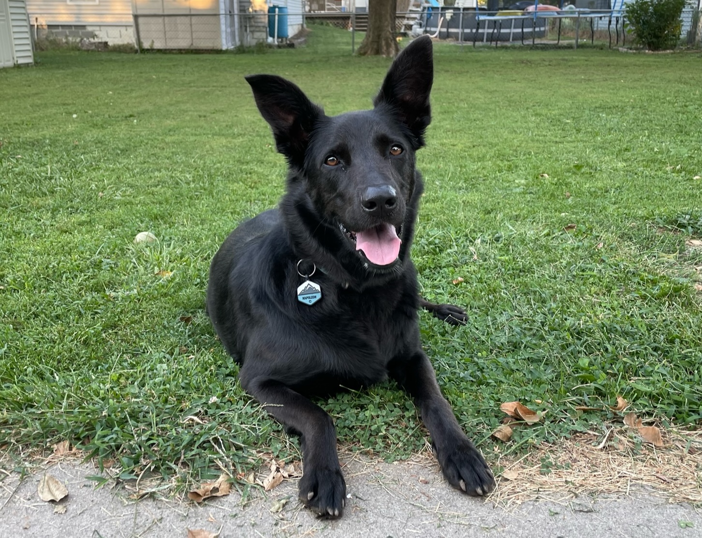

I am a postdoc in the UNL Math Department.
From Fall 2019 to Summer 2022, I was a postdoc in the math department at the University of Michigan, where I worked with Andreas Blass.
During the academic year 2018–2019, I was at Cornell, where I worked with Justin Moore.
In June 2018 I finished my PhD at UCLA under the supervision of Itay Neeman. I was there starting in Fall 2012. Some relics — probably of only historical value — from my time there can be found on this page.
During the academic year 2011–2012 I did Part III math(s) at Cambridge, supported by a Gates Cambridge Scholarship. While there I was the ringleader of the 'Set Theory Reading Club', a small group of students who pursued a non-lecture course in set theory under the guidance of Thomas Forster. In the interest of historical preservation I keep some old materials related to this and other Part III endeavors in the attic, here.
In 2011 I graduated with a BA in Mathematics from UNL. Under the supervision of Roger Wiegand, I wrote an Honors thesis about a topic in combinatorial commutative algebra that is lost to history. Even earlier than that, I did an REU at Indiana University with Allan L. Edmonds.
Email:
znorwood2@unl.edu
Office: Avery Hall 226.
You will not find me on any of the social media. If you encounter someone on Facebook or Tweeter etc. claiming to be me, then you have found an imposter.
Please send me an email if you would like to review a copy of my CV.
(If you are a student, you are in the wrong place. Go to Canvas.)
Teaching has always been a central part of my academic life. Here I simply give a list of courses I've taught recently; interested readers can request a copy of my teaching statement or sample materials.
While a grad student at UCLA, I taught both as the instructor of record and as a TA. Some old materials from those courses are filed away on this page.
Probably most valuable to non-historians are exercise sheets from when I taught the UCLA Logic Summer School,
I was trained as a logician; much of my thesis work focused on definable Ramsey theory and its interactions with large-cardinal hypotheses and determinacy. Any Ramsey-theoretic question is likely to be interesting to me.
I also have a secondary interest in machine learning, mostly as a curious observer. At Michigan I co-mentored a LoG(M) project about visualizing ML algorithms.
Until I have time to put something else here, take a look at the Archive of Formal Proofs.
At Michigan I supervised two REU projects, in addition to the LoG(M) projects mentioned above.
In Summer 2021, Jonah Nan studied Polychromatic Ramsey Properties of Ideals and produced several cool theorems. We are working on a joint paper to submit for publication. Jonah went on to win a Goldwater Scholarship.
In Summer 2020, Zekun Jia studied Ramsey Theory in Models of Set Theory Where the Axiom of Choice Fails and produced several cool results.
Non-mathematical hobbies of mine include reading, running, and playing with my dog:
